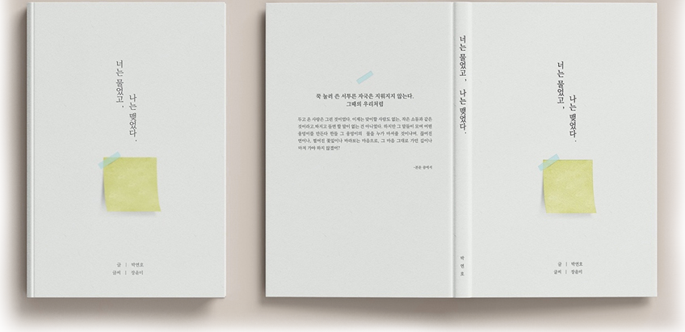
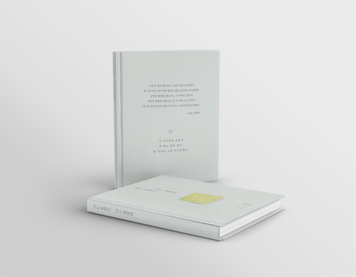


포스트잇은 보통 메모를 하거나 중요한 사항, 혹은 갑자기 떠오른 생각을 빠르게 적어 두는 데 많이 사용됩니다.
이 시집에서 포스트잇은
단순한 메모지가 아닌, 감정과 생각, 물음, 그리고 순간의 기억들을 담아내는 중요한 매개체로 의미를 갖고 있습니다. 특히 작가님께서 시집에 직접
쓴 포스트잇을 속지 안에 함께 넣고 싶어 하셨기 때문에, 앞표지에 노란색 포스트잇을 배치하여 독자들에게 시각적으로도 강한 인상을 주고 호기심을
자극할 수 있는 요소로 디자인했습니다.
책 표지 디자인에 있어서도 시집의 고전적이고 진중한 분위기를 살리기 위해 제목은 명조체로 쓰여졌습니다.
이와 함께, 노란색 포스트잇이 돋보일 수 있도록 배경색은 연한 하늘색 계열을 사용해 시각적인 대비를 이루게 했습니다. 이런 색의 조합은 책의
주요 요소인 노란 포스트잇에 더욱 집중하게 하며,
전체적인 균형감과 조화를 만들어 낼 수 있다고 믿습니다. 또한 뒷표지에는 시집에서 한 구절을 선택해 텍스트로
삽입함으로써 책 내용을 간접적으로나마 독자에게 미리 보여주고자 했습니다.
이 문구는 책의 주제나 분위기를 함축적으로 전달하면서, 독자가 책을
손에 들었을 때 그 속에 담긴 감정과 메시지를 조금이나마 느낄 수 있도록 하는 역할을 합니다.
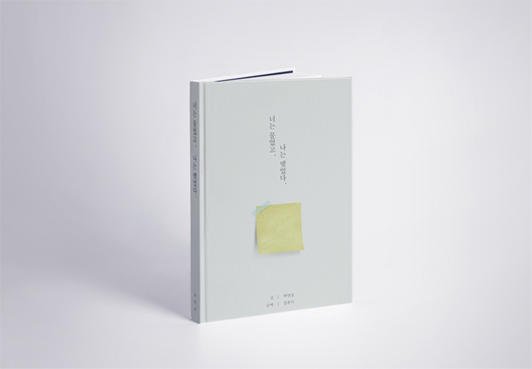
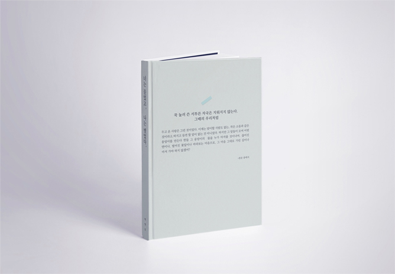
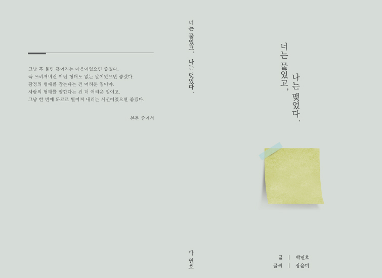
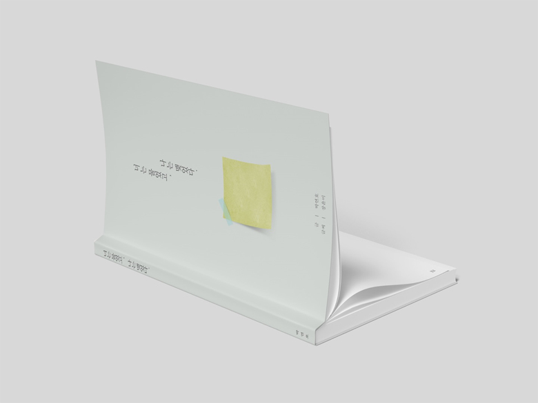
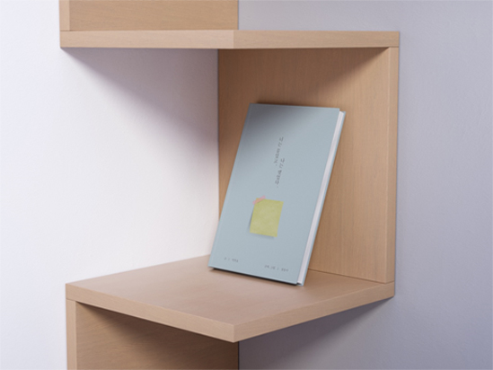
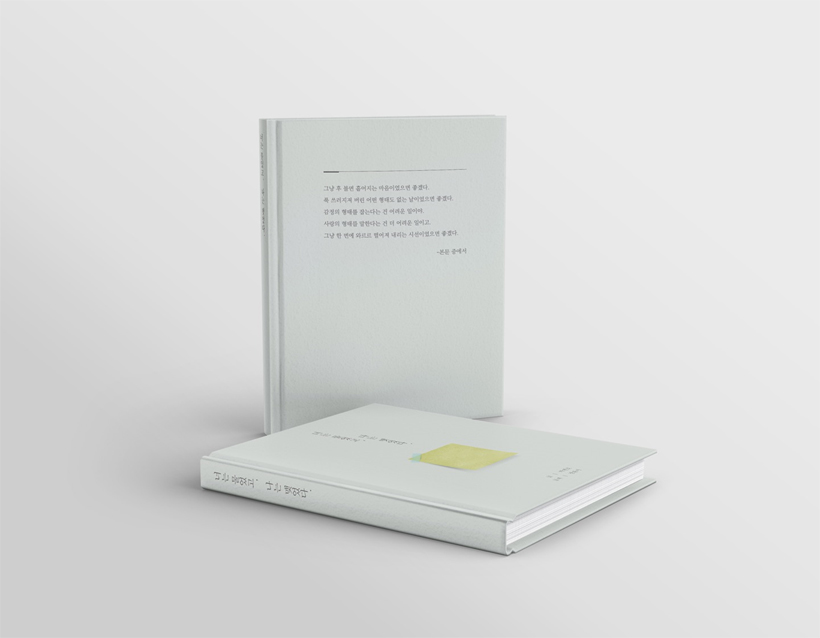
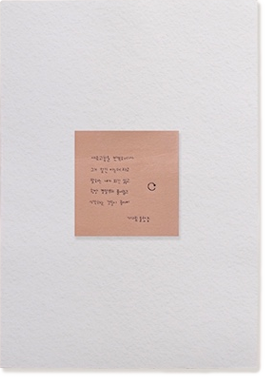
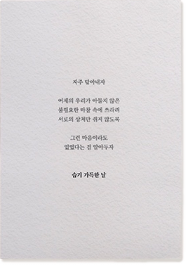
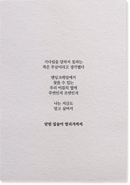
포스트잇 하면 어떤 이미지가 떠오르시나요? 저는 형형색색의 종이가 손가락 끝에 붙은 채로 글을 읽는 사람의
모습이 떠오릅니다. 포스트잇에 마음을 담아 편지처럼 건네는 상상을 합니다.
이책은
두고 온 사랑에 대한 이야기입니다. 안에는 누군가에게 지독한 현실일 것이고, 또 누군가에겐 환상으로 가득한 삶일 것 입니다. 그 안에서 벌어지는
여러 상황과 매개체를 중심으로 벌어지는 짧은 이야기들을 모아 읽는분들도 이런 마음들이 있었음을 추억할 수 있는 시간이 되었으면 하는 마음으로
집필 하게 되었습니다.
90여 편의 포스트잇과 짧은 글로 무던한 위로를 건넵니다.
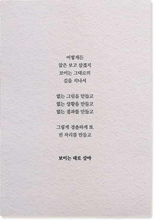
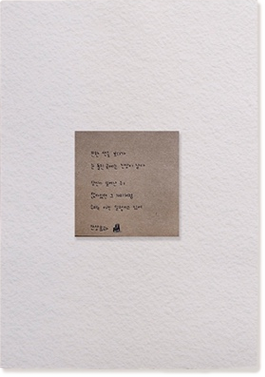
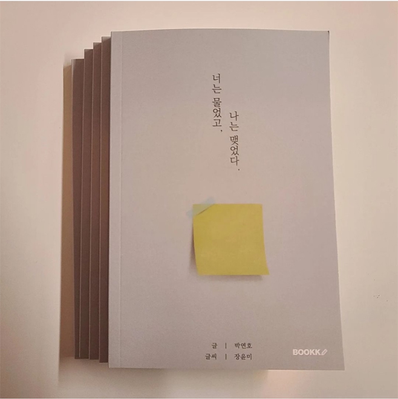
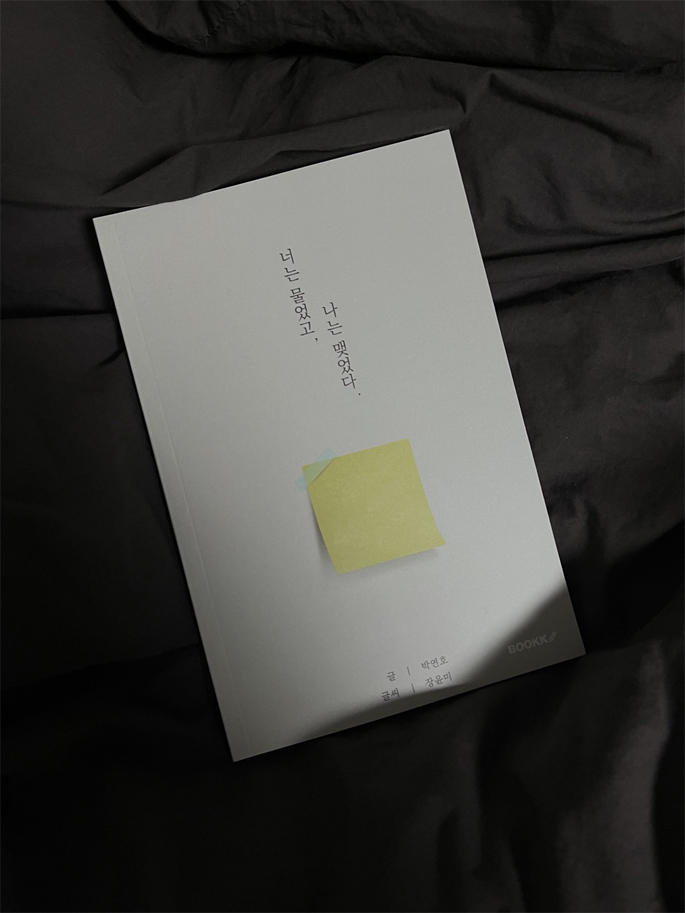